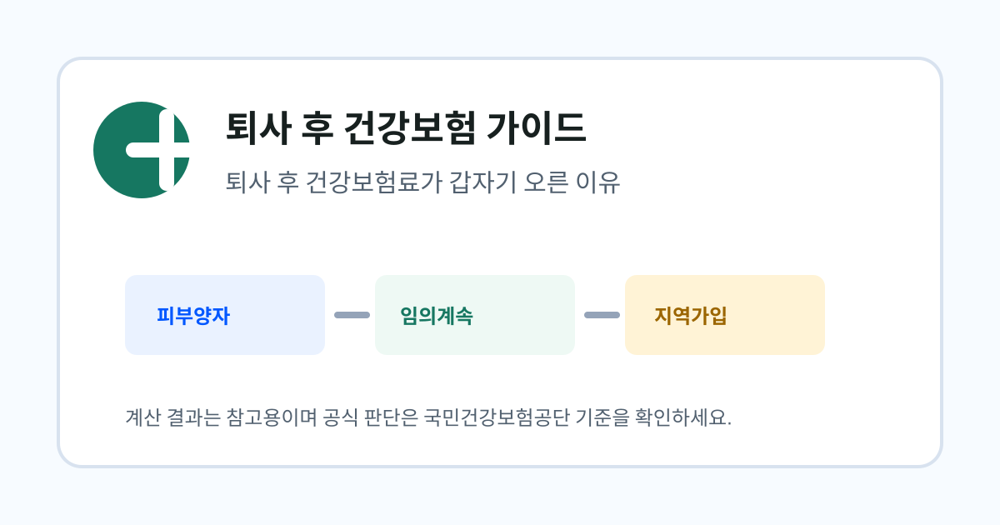

먼저 확인할 상황
- 퇴사 전 체크 순서 잡기
- 첫 지역보험료 고지 대비
- 공단 문의 전 질문 정리
Category
퇴사 직후 건강보험 자격과 보험료를 어떤 순서로 확인해야 하는지 정리합니다.
퇴사일이 정해졌지만 건강보험 자격이 언제, 어떤 방식으로 바뀌는지 아직 감이 잡히지 않는 사람에게 맞춘 안내입니다.
먼저 피부양자 가능성을 확인하고, 어렵다면 임의계속가입과 지역가입자 예상액을 비교합니다. 이후 실제 고지서가 나오면 자격 취득일과 소득 반영 시점을 대조합니다.
퇴사일과 자격상실 신고일, 공단 자료 반영일이 다르면 같은 달 안에서도 안내문과 고지서가 따로 도착할 수 있습니다.
아래 자료를 기준으로 글의 계산 기준과 주의 문구를 검토했습니다. 개인별 금액과 자격 판정은 국민건강보험공단의 최신 자료 반영과 심사 결과가 우선합니다.
작성: 건보계산기 편집팀 · 최종 검토: 2026-06-24

퇴사 후 건강보험 가이드퇴사 후 직장가입자 자격이 끝나면서 소득과 재산 기준이 달라져 보험료가 오를 수 있습니다.
자세히 보기 퇴사 후 건강보험 가이드
퇴사 후 건강보험 가이드
직장가입자 자격 상실 후 지역가입자 전환 시점과 확인해야 할 고지 흐름을 정리합니다.
자세히 보기 퇴사 후 건강보험 가이드
퇴사 후 건강보험 가이드
무직 상태에서 건강보험료 부담을 줄이기 위해 어떤 선택지를 먼저 봐야 하는지 안내합니다.
자세히 보기가족의 직장가입자 밑으로 피부양자 등록을 검토할 때 필요한 기준과 자료를 설명합니다.
자세히 보기국민건강보험공단에 문의하기 전 준비하면 좋은 질문과 자료를 정리합니다.
자세히 보기